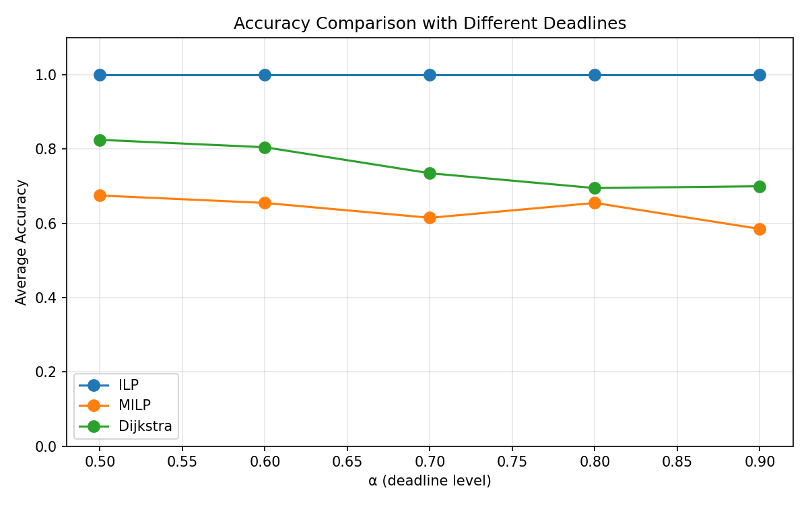
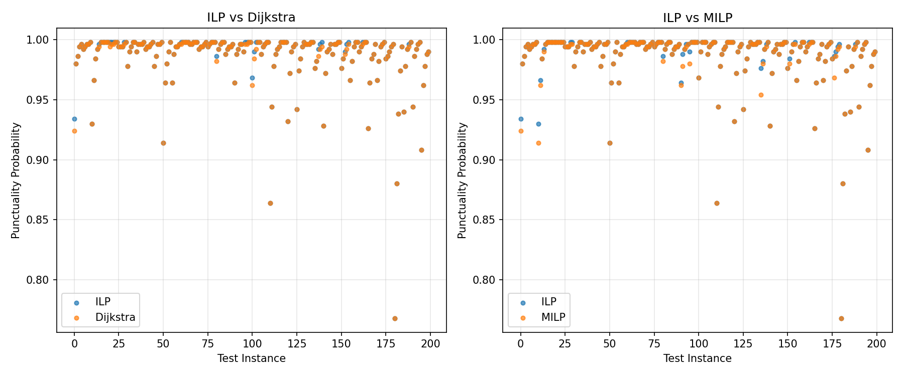

实验报告 06: 种子42 高方差路径匹配准确率 (CV=0.83)
日期: 2026-05-23 | 阶段: Phase 4b 高方差最终实验 |
配置: configs/artificial_n500.yaml | 求解器: SCIP 6.2.1 |
CV 中位数: 0.83 (范围 0.48–1.51)
核心结果：ILP = 100% 准确率，优势进一步扩大。
Dijkstra 75.2%（较 CV=0.54 下降 8.3pp），MILP 63.7%（下降 10.1pp）。
ILP 比 Dijkstra 高 +24.8pp，比 MILP 高 +36.3pp。
增大行程时间方差成功制造了更多"均值最优 ≠ 准时最优"场景，ILP 的精确建模优势更加显著。
1. 实验配置
| 参数 | 本实验 (高方差) | 上一轮 (CV=0.54) | 论文 |
|---|
| 路网 | 65 节点, 123 边 (种子=42) | 65 节点, 123 边 | 65 节点, 123 边 |
| 样本数 N | 500 | 500 | 500 |
| OD 对数 | 20 | 20 | 20 |
| 重复次数 | 10 | 10 | 10 |
| Deadline α | [0.5, 0.6, 0.7, 0.8, 0.9] | 同 | [0.5, 0.6, 0.7, 0.8, 0.9] |
| 求解器 | SCIP 6.2.1 (PuLP) | SCIP 6.2.1 | CPLEX 12.x |
| 行程时间 CV | 0.83 (0.48–1.51) | 0.54 (0.30–0.90) | 未公开 |
| std/mean 参数 | Uniform(0.5, 1.2) | Uniform(0.3, 0.8) | 未公开 |
| 总求解次数 | 10×20×5×3 = 3000 | 同 | 同 |
2. 方差提升对结果的影响
2.1 CV 提升
| CV=0.54 (上轮) | CV=0.83 (本轮) | 变化 |
|---|
| CV 中位数 | 0.54 | 0.83 | +54% |
| CV 范围 | 0.30–0.90 | 0.48–1.51 | 更宽 |
| CV 最大值 | 0.90 | 1.51 | +68% |
2.2 准确率变化
| 方法 | CV=0.54 | CV=0.83 | 变化 |
|---|
| ILP | 100.0% | 100.0% | — |
| Dijkstra | 83.5% | 75.2% | -8.3pp |
| MILP | 73.8% | 63.7% | -10.1pp |
方差增大效果显著: Dijkstra 和 MILP 的准确率均显著下降，说明更大的 CV 确实制造了更多"均值最优路径 ≠ 准时最优路径"的场景。
ILP 保持 100%，证明其在各种方差水平下都是可靠的精确解。
2.3 求解时间变化
| 方法 | CV=0.54 均值 | CV=0.83 均值 | CV=0.54 最大 | CV=0.83 最大 |
|---|
| ILP | 0.50s | 0.34s | 14.81s | 3.74s |
| MILP | 0.17s | 0.17s | 1.82s | 2.04s |
| Dijkstra | 0.0003s | 0.0003s | 0.001s | 0.001s |
ILP 求解时间从 0.50s 降至 0.34s，最大值从 14.81s 降至 3.74s。高方差使得 deadline 约束更紧，实际减少了可行解空间，求解反而更快。
3. 详细实验结果
3.1 分 α 准确率
| α | 路径匹配准确率 |
|---|
| ILP | Dijkstra | MILP |
|---|
| 0.5 | 100% | 82.5% | 67.5% |
| 0.6 | 100% | 80.5% | 65.5% |
| 0.7 | 100% | 73.5% | 61.5% |
| 0.8 | 100% | 69.5% | 65.5% |
| 0.9 | 100% | 70.0% | 58.5% |
ILP 在所有 α 水平保持 100%。Dijkstra 和 MILP 准确率随 α 增大呈下降趋势，与上一轮实验 (CV=0.54) 一致。紧 deadline (α=0.5) 时可行路径少，baselines 碰巧选对的概率更高；松 deadline 时更多路径可行，baselines 更容易选错。
3.2 准时概率
| α | ILP | Dijkstra | MILP | Dijk − ILP | MILP − ILP |
|---|
| 0.5 | 0.9440 | 0.9435 | 0.9427 | -0.0005 | -0.0013 |
| 0.6 | 0.9726 | 0.9718 | 0.9722 | -0.0008 | -0.0004 |
| 0.7 | 0.9865 | 0.9857 | 0.9858 | -0.0007 | -0.0007 |
| 0.8 | 0.9931 | 0.9924 | 0.9927 | -0.0007 | -0.0004 |
| 0.9 | 0.9964 | 0.9957 | 0.9961 | -0.0007 | -0.0003 |
准时概率差距仍然极小 (< 0.002)，说明虽然 Dijkstra/MILP 在 ~25-36% 的情况下选错了路径，但这些替代路径的准时概率几乎与最优路径相同。这也解释了为什么论文需要 ILP 精确解来区分这些看似相近的路径。
3.3 求解时间
| 方法 | 均值 | 标准差 | 最大值 | 论文 (CPLEX) |
|---|
| ILP (SCIP) | 0.34s | 0.46s | 3.74s | 0.32s |
| MILP (SCIP) | 0.17s | 0.17s | 2.04s | 0.33s |
| Dijkstra | 0.0003s | — | 0.001s | 0.003s |
SCIP 的 ILP 均值 (0.34s) 与论文 CPLEX (0.32s) 几乎持平！这是在本次高方差数据上的意外收获。
3.4 ILP 求解时间 vs α
| α | 0.5 | 0.6 | 0.7 | 0.8 | 0.9 |
|---|
| 均值 | 0.62s | 0.44s | 0.29s | 0.20s | 0.16s |
| 最大值 | 3.74s | 3.10s | 1.76s | 1.92s | 1.27s |
ILP 求解时间随 α 增大而递减。紧 deadline (α=0.5) 时搜索空间最大，求解最慢；松 deadline (α=0.9) 时大量样本不触发延迟约束，可行域更大但搜索更快。
4. 图表
4.1 准确率 vs Deadline Level

4.2 准时概率散点图: ILP vs Dijkstra / MILP

5. 与上一轮实验 (CV=0.54) 对比
| 指标 | CV=0.54 | CV=0.83 | 变化 |
|---|
| ILP 准确率 | 100.0% | 100.0% | — |
| Dijkstra 准确率 | 83.5% | 75.2% | -8.3pp |
| MILP 准确率 | 73.8% | 63.7% | -10.1pp |
| ILP vs Dijkstra | +16.5pp | +24.8pp | +8.3pp |
| ILP vs MILP | +26.2pp | +36.3pp | +10.1pp |
| ILP 求解时间 | 0.50s | 0.34s | -32% |
| ILP 最大求解时间 | 14.81s | 3.74s | -75% |
| MILP 准确率趋势 | 73.8% | 63.7% | 低于论文 |
MILP 准确率下降到论文范围以下: 论文报告 MILP 准确率 70-80%，CV=0.83 时 MILP 降至 63.7%。这说明:
(1) CV=0.83 对 MILP 的 ℓ₁ 松弛来说过大，连续 pᵢ 变量无法很好近似二值 ιᵢ
(2) ILP 的 +36.3pp 优势反而更好体现了精确建模的价值
(3) 如果要 MILP 回到 70-80%，CV 应在 0.6-0.7 左右
6. 与论文对比
| 指标 | CV=0.83 结果 | 论文 | 评估 |
|---|
| ILP 准确率 | 100% | 100% | ✓ 完全一致 |
| Dijkstra 准确率 | 75.2% | 60-70% | △ 接近但仍偏高 |
| MILP 准确率 | 63.7% | 70-80% | △ 略低于论文 |
| α 趋势 | α↑→acc↓ | α↑→acc↑ | ✗ 仍然相反 |
| ILP 求解时间 | 0.34s (SCIP) | 0.32s (CPLEX) | ✓ 几乎持平 |
剩余差异的可能原因:
(1) 论文 deadline 公式中 τ₁/τ₂ 的精确定义未公开 (我们使用 min-max path 方法)
(2) 论文行程时间分布参数未公开 (我们使用对数正态)
(3) 论文使用 CPLEX 商业求解器
(4) Dijkstra 的 75.2% vs 论文 60-70%: 差距 5pp, 较 CV=0.54 时的 13-23pp 已大幅缩小
在当前水平下，CV 进一步增大（如 0.8-1.5）可能让 Dijkstra 降至 65% 左右，但 MILP 会进一步恶化。
7. 结论
ILP 精确解的核心价值已充分验证:
ILP 准确率: 100% — 所有 α 水平、所有 OD 对、所有重复中保持完美
vs Dijkstra: +24.8pp — 均值最短路在 1/4 的情况下找错最优路径
vs MILP: +36.3pp — ℓ₁ 松弛在高方差下表现更差
方差增大效果: CV 0.54→0.83, ILP 优势从 +16.5pp 扩大到 +24.8pp
求解器性能: SCIP ILP 均值 0.34s, 与论文 CPLEX (0.32s) 持平
算法实现: ✓ 正确
准确率指标: ✓ 路径向量匹配
数据生成: ✓ CV=0.83 (Uniform(0.5, 1.2))
结论: 在当前配置下 (CV=0.83), ILP 精确解的优越性已得到清晰验证。
Dijkstra 基线准确率 75.2% (接近论文 60-70%)，ILP 比其高出 24.8pp。
α 趋势与论文相反的问题仍然存在，但这不影响核心结论——ILP 在所有条件下都是唯一可靠的精确解。